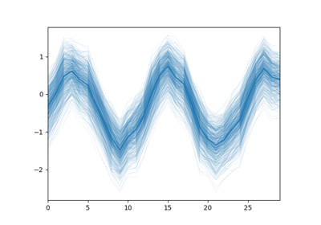

Welcome to Sphinx-Gallery’s documentation!¶
A Sphinx extension that builds an HTML gallery of examples from any set of Python scripts.
It is extracted from the scikit-learn project and aims to be an independent general purpose extension.
The code of the project is on Github: Sphinx-Gallery
Why Sphinx-Gallery?¶
- Simple examples that run out of the box are the best way to learn a library
- Pleasing, organized, visual layouts
- Links, searching, backlinks throughout examples and documentation
What does it look like?¶
Here is an example gallery generated from a few Python scripts.
Examples using numpy.sin¶

Here we put only the examples of our gallery that use a specific function. This display granularity ready to use within your documentation, not just the gigantic galleries with all the examples together.
Go ahead, click on those thumbnails to go to the examples. Beautifully rendered HTML versions of the original python scripts with, narrating prose from the doctrings and inline comments and plots generated by the scripts.
Features¶
- Runs Python files and captures outputs + figures. Learn how to Set up your project
- Manage Multiple galleries no number limit.
- Automatically hyperlink the code in the gallery to the corresponding function documentation. Linking to documentation
- Automatically links from documented functions to examples using the function. References to examples (backreferences)
- Notebook styled examples: turn your scripts into a full narrative with the Notebook Styled examples syntax
Sphinx-Gallery Show: Gallery of Examples¶
Contents:¶
- Getting Started to Sphinx-Gallery
- Advanced Configuration
- Manage Multiple galleries
- Building examples matching a pattern
- Linking to documentation
- References to examples (backreferences)
- Using a custom default thumbnail image
- Choosing the thumbnail image from multiple figures
- Build the Gallery without executing the examples
- Dealing with failing Gallery example scripts
- Frequently Asked Questions
- Sphinx-Gallery Syntax
- Sphinx-Gallery Utilities
- Sphinx-Gallery API Reference
- Gallery of Examples
- Secondary gallery
- Gallery of Examples using Mayavi
- Change Log
- Fork sphinx-gallery on Github